Префектура Канагава · Ёкосука, Акия · ресторан и ночлег
«Вайн-но ки AKIYA»: итальянская кухня из продуктов Миуры и дом у моря на одну компанию
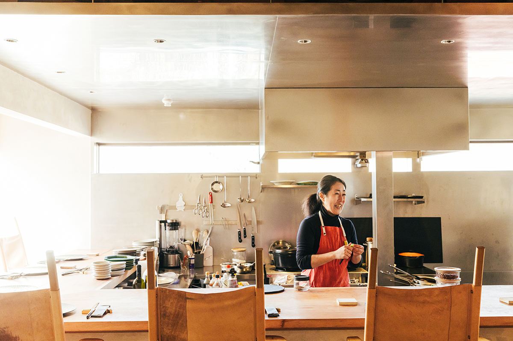
Акия, тихий район Ёкосуки по соседству с Дзуси и Хаямой, к 2023 году стал одним из самых популярных мест для переезда. Летом 2022 года здесь открыла ресторан шеф, которая много лет кормила гостей в токийском районе Эбису.
Шеф
Из Эбису в Акию
От станции Дзуси до Акии около 15 минут на машине. Стоит въехать в район, и воздух будто становится мягче. Вдоль берега открывается вид на Фудзи над бирюзовым морем, а если свернуть в холмы, начинаются поля, каких в Канагаве не ждёшь.
«Здесь рядом и море, и горы. Знаменитых достопримечательностей нет, но дует очень хороший ветер. Сколько ни живу, не перестаю радоваться», говорит Нацуко Сакума, владелица и шеф ресторана. Полуостров Миура она полюбила ещё в двадцать с небольшим. Около 2012 года она открыла в Эбису итальянский ресторан «Вайн-но ки» и ездила на Миуру за продуктами чаще, чем раз в три дня. Однажды ей пришло в голову: если ездить сюда так легко, почему бы не жить здесь, а в Токио ездить на работу.
Нашёлся столетний деревенский дом, в который она влюбилась с первого взгляда, и примерно в 2017 году, когда ребёнок пошёл в детский сад, семья переехала. Сначала дом, потом ресторан: во время пандемии она перестроила под ресторан старый дом в переулке недалеко от моря. Закрыть заведение в Эбису не дали постоянные гости, которые стали ей почти родными. В итоге к 2023 году сложился такой порядок: по будням Сакума работает в Токио, по выходным в Акии.
Серьёзного поварского обучения, по её словам, у неё нет: она набиралась опыта в известных итальянских ресторанах. Но тонкий вкус и природное чутьё позволяют ей готовить блюда, которые не надоедают даже завсегдатаям.
Продукты
Утренний маршрут: ферма и рыбная лавка
«Моя кухня начинается с производителей», говорит Сакума. Чем глубже она врастала в местную жизнь, тем больше это правило становилось образом жизни. Во дворе у неё живут куры, каждый день она смотрит на поля и дышит запахом земли и моря, и с фермерами и рыбаками у неё завязалась настоящая дружба.
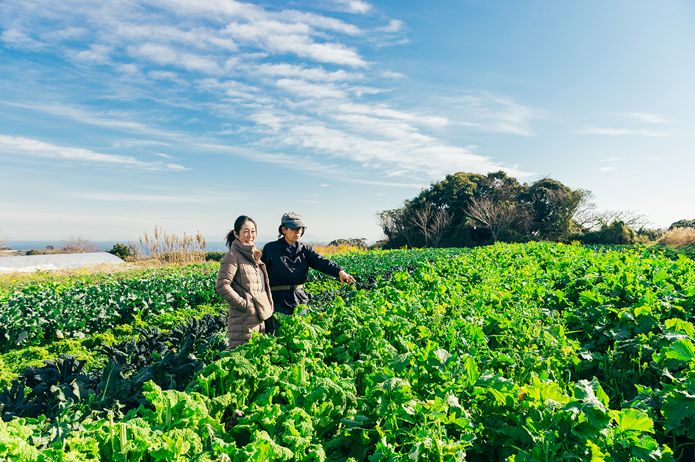
Сезонные овощи она берёт только в магазине при ферме «Таканаси нодзё», куда ездят многие сильные повара. На полях над морем здесь растёт чима ди рапа и другие редкие для Японии европейские овощи. «Я отвечал на просьбы поваров, и сортов становилось всё больше», объясняет хозяин фермы и, шагая между грядками, рассказывает, как выращивает каждый из них.
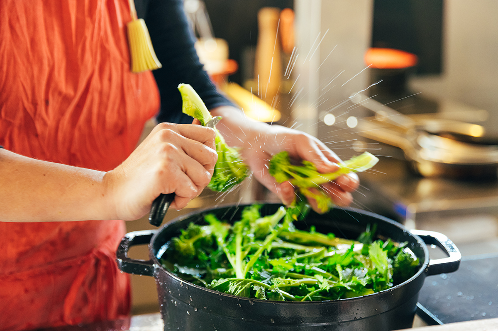
Рыбу она покупает в лавке «Маруёси сётэн» у рыбацкого порта Садзима. На прилавке бьётся рыба, которая утром ещё плавала в море. В тот день Сакума попросила разделать рыбу-саблю на филе и внимательно следила за ножом продавца.
«С рыбой я ещё учусь. Хочу разделывать быстрее и чище, поэтому смотрю, как это делают профессионалы»
Нацуко Сакума
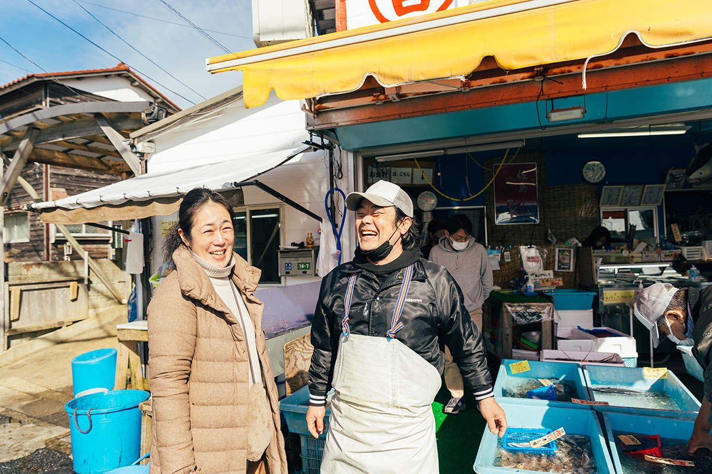
С мясом так же. Дичь ей несколько лет присылает охотник из префектуры Мияги, к которому она сама ездила договариваться. Получая такое живое, свежее мясо, она научилась сама ощипывать утку и разделывать мясо.
«Овощи, рыба, утка: всё сезонное, всегда этого не поешь. Но если гость пару раз попробовал вкус сезона, он начинает ждать: скоро ведь время того блюда. Мне нравится этот разговор»
Нацуко Сакума
Ужин
Девять мест у стойки
Ужин подают за деревянной стойкой на девять мест, и выбор здесь один: на усмотрение шефа. Меню нет, но гибкости много. Можно взять закуску и два основных блюда, а можно ужин из пяти или шести блюд. Занимаясь заготовками, Сакума смотрит на гостей, спрашивает, голодны ли они и хотят ли ещё, и из продуктов дня собирает ужин.
«Гости для меня как дети. Хочу, чтобы они ели спокойную еду, которая не нагружает тело, и уходили с новыми силами»
Нацуко Сакума
Её кухню можно назвать домашней: живые продукты, простая готовка. К каждому блюду Сакума как сомелье подбирает итальянское или японское вино по весу и цвету еды. Стулья заказаны так, чтобы в них удобно было сидеть с бокалом, а простая посуда не спорит с блюдами. В 2023 году ужин с подобранными винами стоил от 12 000 иен.
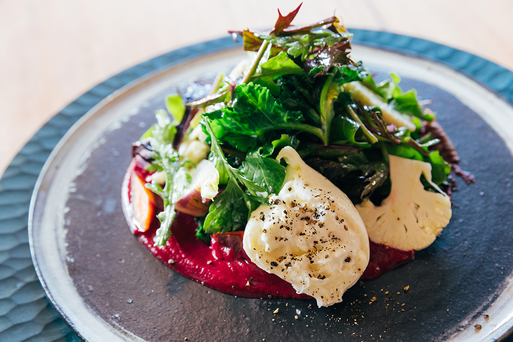
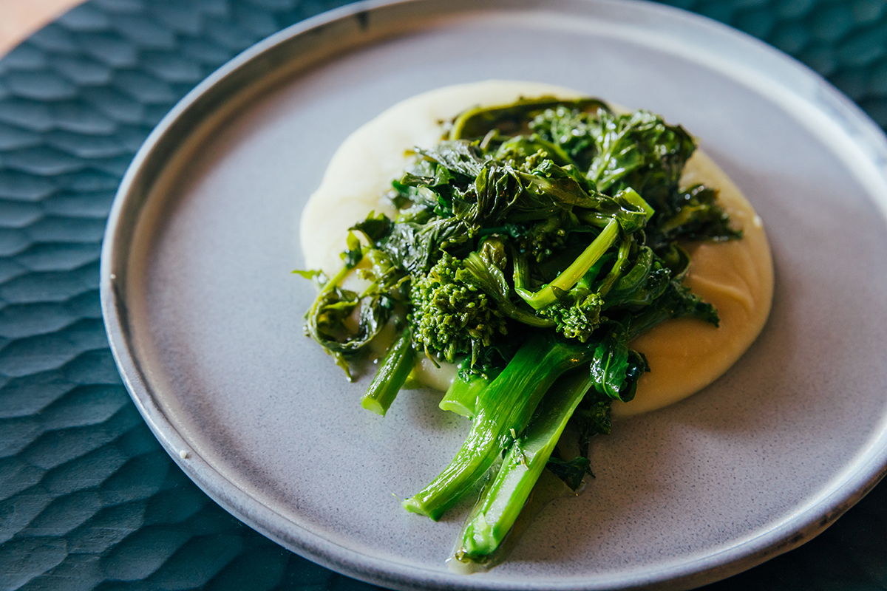
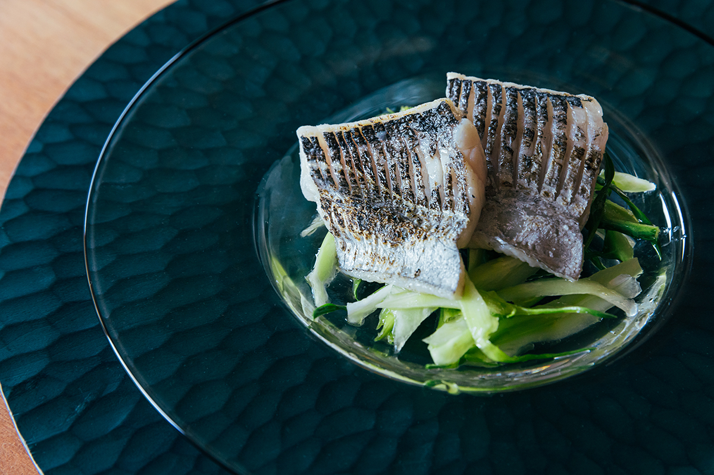
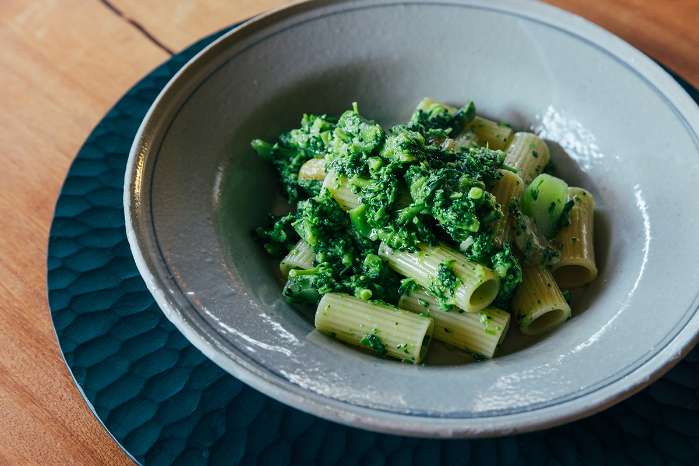
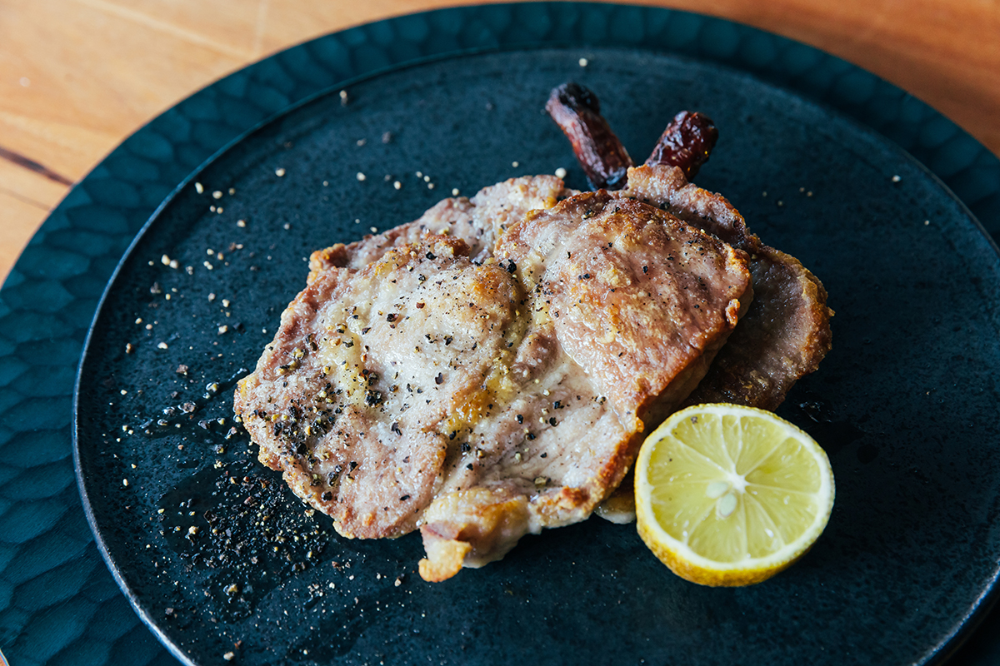
Ночлег
Дом на одну компанию
После такого ужина не хочется смотреть на часы, и для этого при ресторане есть номер, который принимает одну компанию в день. Ночлег устроен как членство: так владелица хотела сделать полуостров Миура ближе для своих гостей. Старый дом восстанавливали своими руками вместе с друзьями, и он легко становится вторым домом.
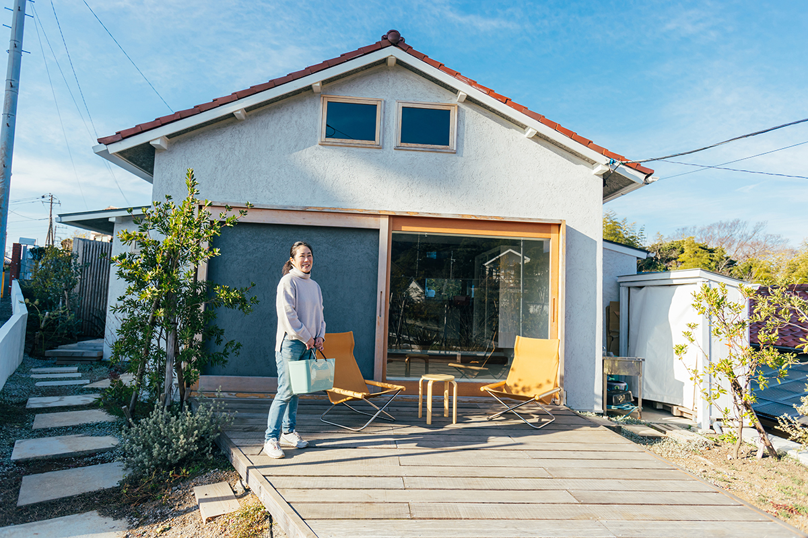
«Для тех, кто устал в городе, и для тех, кто только думает о переезде. Хочу, чтобы здесь отдыхали, как будто тут живут», говорит Сакума. С едой всё свободно: завтрак в любое время, можно и самим готовить на кухне. До пляжа несколько минут пешком, и можно идти туда в шлёпанцах и купальнике, как местные. Рядом горы для прогулок. В ясный день вино пьют на террасе, в холодный у дровяной печи.
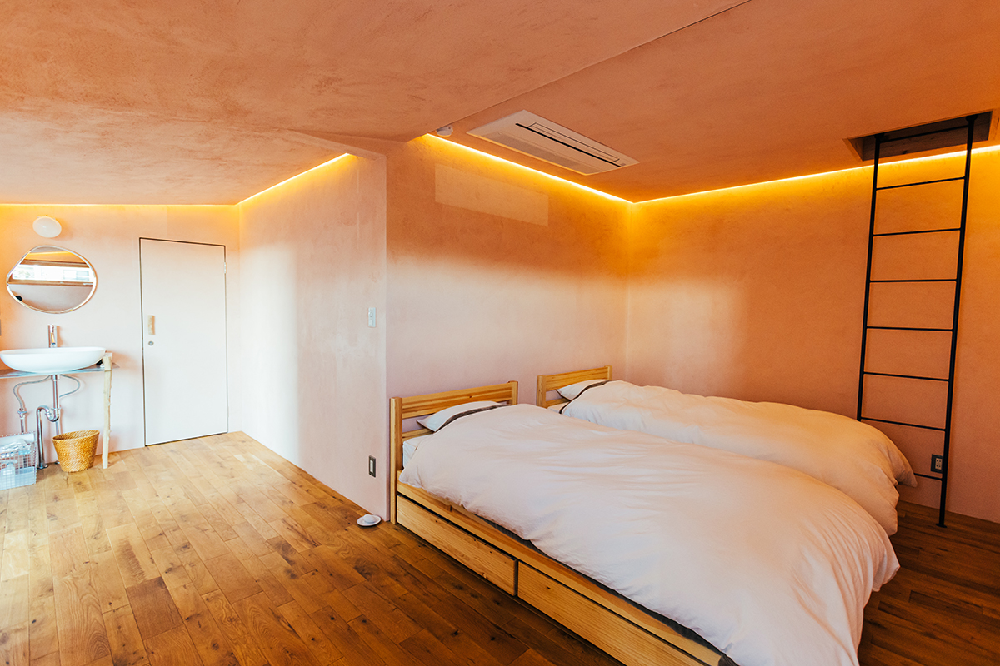
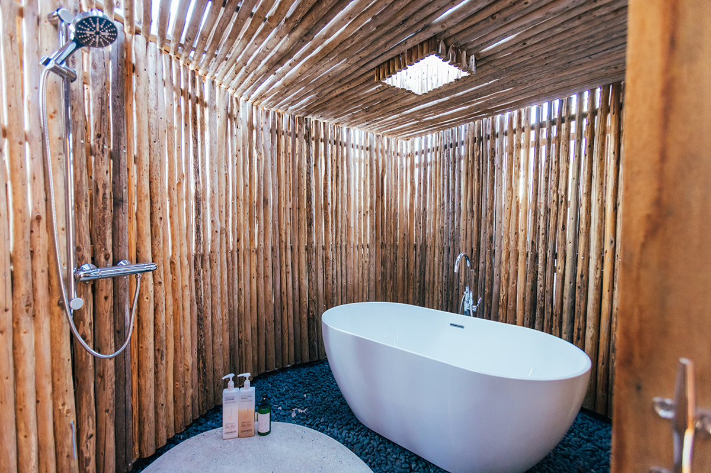
В 2023 году членство было рассчитано на 30 человек и действовало три года. В него входили 20 билетов на ночлег во всём доме (одна ночь для компании от одного до восьми человек, каждый билет оценивался в 25 000 иен; за ночь с пятницы, субботы или воскресенья, в праздник или накануне праздника нужно два билета) и бутылка вина из запасов шефа раз в год.
«Вайн-но ки AKIYA»
- Адрес
- префектура Канагава, Ёкосука, Акия, 1-2-16
- Телефон
- +81 70-8371-8013
- Часы работы
- дни и часы работы публикуются в Instagram ресторана
- Цены / Вход
- ужин (сет с подобранными винами) от 12 000 иен; ночлег для членов клуба
Фото: Майко Фукуи.